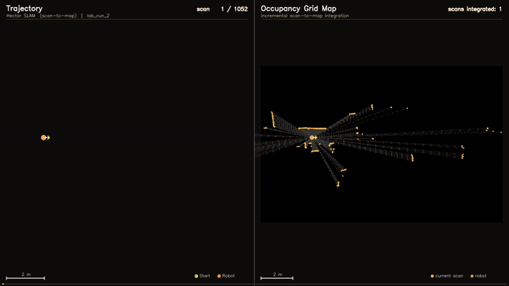
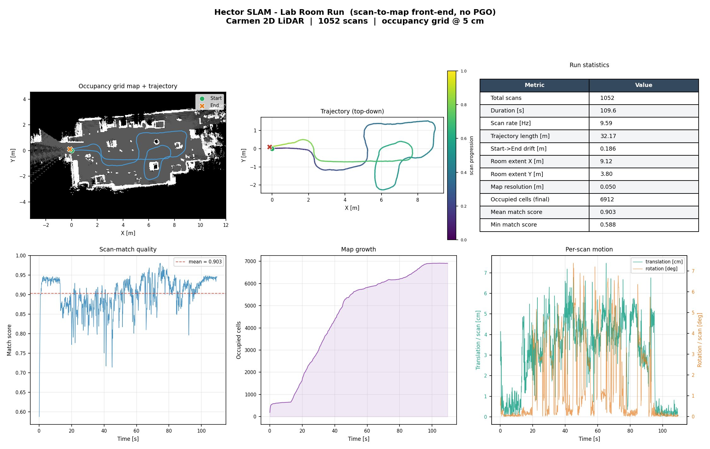

Real-time occupancy grid map building on the Jetpack AI Racer - trajectory (left) and incremental scan integration (right) as the robot navigates the lab space
A Python implementation of Hector SLAM extended with pose-graph optimization. The system builds an occupancy grid map by iteratively matching 2D LiDAR scans against the current map using Gauss-Newton optimization across a multi-resolution pyramid - without requiring any wheel odometry. Evaluated on the Freiburg CARMEN benchmark and validated in real-time on a Jetpack AI Racer mobile robot powered by a NVIDIA Jetson board, confirming the implementation handles real sensor data and physical noise beyond offline datasets.
Hector SLAM is one of the most elegant formulations in 2D LiDAR SLAM. It requires no wheel odometry and operates purely on scan-to-map alignment. Building the pipeline directly in Python, rather than wrapping an existing ROS implementation, requires understanding every component in depth: how occupancy grids encode spatial belief, why multi-resolution pyramids are necessary for robust convergence, how the Gauss-Newton update is derived from the scan-alignment energy, and what happens to trajectory consistency when pose-graph optimization corrects accumulated drift over long runs.
Each incoming LiDAR scan is aligned to the current occupancy grid by minimizing E = sum(1 - M(p_i_world))^2, where M is the bilinearly-interpolated occupancy probability at each scan endpoint. The Gauss-Newton update requires the Jacobian of map occupancy with respect to pose [x, y, theta], computed analytically using spatial gradients of the probability grid. Levenberg-Marquardt damping stabilizes optimization when the Hessian approximation is poorly conditioned during fast rotation or low-overlap scans.
Scan matching runs coarse-to-fine across a pyramid of occupancy grids at decreasing resolutions. Coarse levels capture large initial pose uncertainty; fine levels refine alignment precisely. This prevents convergence to local minima during fast robot turns or in corridors where the scan provides weak rotational constraint.
After each scan alignment, the map is updated via log-odds occupancy integration. Free cells along each ray are decremented and occupied cells at scan endpoints are incremented using Bresenham raycast - the same update rule as the original Hector SLAM formulation.
After the full trajectory is computed, relative pose constraints are loaded from the benchmark dataset. Pairs of poses within a configurable time threshold are connected as loop closure edges. The pose graph is then optimized using a sparse SciPy solver to minimize constraint violations across all edges - correcting accumulated drift and producing a globally consistent trajectory.
Beyond benchmark evaluation, the framework was deployed and validated in real-time on a Jetpack AI Racer mobile robot equipped with a 2D LiDAR and powered by a NVIDIA Jetson onboard computer. The lab room run shown in the demo demonstrates the system building an occupancy grid map live as the robot navigates the space, confirming that the implementation handles real sensor data, timing variability, and physical noise under real-world conditions.
Core implementation, Gauss-Newton solver, sparse PGO
Log-odds Bayesian update with Bresenham raycast
Coarse-to-fine scan matching for robust convergence
Onboard compute for real-time deployment on Jetpack AI Racer
Sensor input for both benchmark and real-time runs
Benchmark dataset for quantitative PGO evaluation
The most technically demanding aspect was deriving and implementing the Gauss-Newton Jacobian analytically - the gradient of bilinearly-interpolated occupancy probability with respect to SE(2) pose. This required careful handling of coordinate frame transforms between lidar, world, and grid coordinate systems, and understanding how interpolation errors propagate into the optimization update.
Deploying on the Jetson also revealed the gap between offline dataset replay and real-time operation. Scan timing, sensor noise characteristics, and the robot's physical dynamics all affect convergence in ways that are invisible when replaying recorded data at a controlled rate.
Full run statistics and analysis from the real lab deployment - occupancy map, trajectory, scan-match quality, map growth, and per-scan motion profiles.

Complete Python implementation with reproducible execution pipeline and evaluation scripts.
View on GitHub